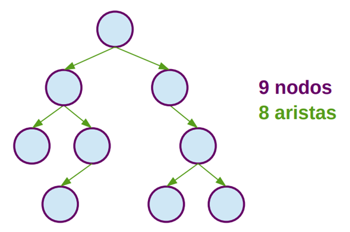

1.Un árbol binario con n nodos, contiene exactamente n-1 aristas o conexiones

2. Un árbol binario de altura h, tiene una cantidad de nodos mayor o igual a h+1 y menor o igual a 2 h+1-1
3. Un árbol binario completo, de altura h, tiene exactamente 2h+1-1 nodos